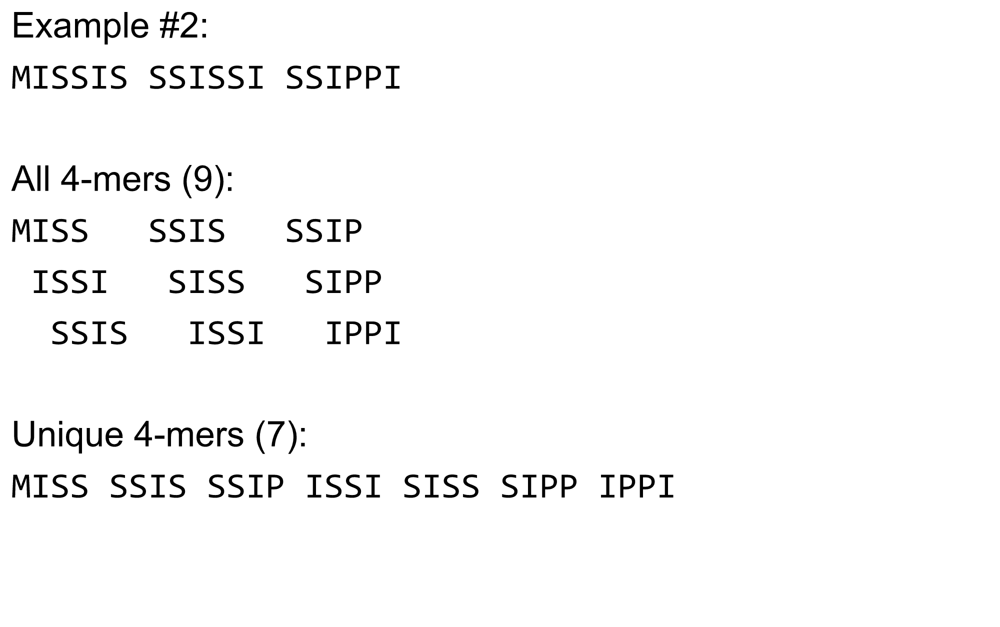

Deeper look into Genome Assembly algorithms
Contributors
 Anthony Bretaudeau
Anthony Bretaudeau  Simon Gladman
Simon Gladman  Anton Nekrutenko
Anton Nekrutenko  Delphine Lariviere
Delphine Lariviere
Questions
What are the main types of assembly algorithms?
How do they perform with short and long reads?
How to improve assemblies using other technologies?
Different types of input data
- Short reads (Illumina): numerous üëç, high quality üëç, cheap üëç, short üëé
- Long reads (PacBio, Nanopore): longer üëç, fewer üëé, (many) more errors üëé
Genome Assembly can be done with:
- only short reads
- only long reads
- both (hybrid assembly)
Specific algorithms for each
Genome Assembly algorithms
Detect overlaps between reads to build the longest possible sequences
Algorithms use graphs to represent overlapping reads/words
Two steps:
- Build a (huge) graph while reading the input data
- Try to find the longest paths traversing the graph
Two main types of algorithms:
- Short reads: de Bruijn Graphs
- Long reads: OLC (Overlap Layout Consensus)
OLC (Overlap Layout Consensus)
The older, first used for Sanger sequencing
Compare all reads, look for read overlaps
If a suffix of one read is similar to a prefix of another read…
TCTATATCTCGGCTCTAGG <- read 1
||||||| |||||||
TATCTCGACTCTAGGCC <- read 2
…then they may overlap within the genome.
Directed graphs
We build a directed graph where directed edges connect nodes representing overlapping reads:

Directed graph representing overlapping reads. (Image from Ben Langmead).
Directed graphs
For example, consider these 15 three letter reads:
TAA AAT ATG TGC GCC CCA CAT ATG TGG GGG GGA GAT ATG TGT GTT
We’re lucky, we know the corresponding genome sequence is TAATGCCATGGGATGTT
So the 15 reads can be represented as the following directed graph:

However, in real life we do not know the actual genome! All we have is a collection of reads. Let’s first build an overlap graph by connecting two 3-mers if suffix of one is equal to the prefix of the other:
Overlap graph. All possible overlap connections for our 3-mer collection. (Fig. 4.7 from CP)
So to determine the sequence of the underlying genome we are looking for a path in this graph that visits every node (3-mer) once. Such path is called Hamiltonian path and it may not be unique.
For example for our 3-mer collection there are two possible Hamiltonian paths:


Two Hamiltonian paths for the 15 3-mers. Edges spelling “genomes” TAATGCCATGGGATGTT and TAATGGGATGCCATGTT are highlighted in black. (Fig. 4.9. from [CP](http://bioinformaticsalgorithms.com/)).
The reason for this “duality” is the fact that we have a repeat: 3-mer ATG is present three times in our data (green, red, and blue). Repeats cause a lot of trouble in genome assembly.
Limits of OLC
- Computationally intensive
- Doesn’t perform well with Illumina (massive amount of short reads)
=> deBruijn Graphs
de Bruijn Graphs
Based on a counter-intuitive idea
- Hash all reads in overlapping fixed-length words
- Words = k-mers of size k
- Build a directed graph where nodes are k-mers and edges represent overlaps between k-mers
What are K-mers?

K-mers de Bruijn graph

K-mers de Bruijn graph

K-mers de Bruijn graph
K-mers de Bruijn graph

The problem of repeats
The problem of repeats

The problem of repeats

The problem of repeats
Different k
—
Different k
—
Different k
 —
—
Different k

Choose k wisely
- Lower k
- More connections
- Less chance of resolving small repeats
- Higher k-mer coverage
- Higher k
- Less connections
- More chance of resolving small repeats
- Lower k-mer coverage
Optimum value for k will balance these effects.
Read errors
.image-75[ ]
]
 —
—
Read errors
.image-75[]
 —
—
Read errors
.image-75[]
 —
—
Read errors
.image-75[]
Coverage (or sequencing depth)
The number of unique reads that contain a given nucleotide in the reconstructed sequence.

Source: Wikimedia
Estimated coverage
(number of reads x read length) / estimated size of the genome
1,000,000 reads x 150bp / 10Mb = 15X
More coverage
- Errors won’t be duplicated in every read
- Most reads will be error free
- We can count the frequency of each k-mer
- Annotate the graph with the frequencies
- Use the frequency data to clean the de Bruijn graph
More coverage depth will help overcome errors!
Read errors revisited
de Bruijn graph assembly process
- Select a value for k
- “Hash” the reads (make the kmers)
- Count the kmers
- Make the de Bruijn graph
- Perform graph simplification steps
- Read off contigs from simplified graph
Make contigs
- Find an unbalanced node in the graph
- Follow the chain of nodes and “read off” the bases to produce the contigs
- Where there is an ambiguous divergence/convergence, stop the current contig and start a new one.
- Re-trace the reads through the contigs to help with repeat resolution
Assembly in real life
In this topic we’ve learned about two ways of representing the relationship between reads derived from a genome we are trying to assemble:
- Overlap graphs - nodes are reads, edges are overlaps between reads.
- De Bruijn graphs - nodes are overlaps, edges are reads.
Overlap graph

de Bruijn Graph - same data

Whatever the representation will be it will be messy:

A fragment of a very large De Bruijn graph (Image from BL).
There are multiple reasons for such messiness:
Sequence errors
Sequencing machines do not give perfect data. This results in spurious deviations on the graph. Some sequencing technologies such as Oxford Nanopore have very high error rate of ~15%.
Graph components resulting from sequencing errors (Image from BL).

Ploidy
As we discussed earlier humans are diploid and there are multiple differences between maternal and paternal genomes. This creates “bubbles” on assembly graphs:
Bubbles due to a heterozygous site (Image from BL).
Repeats
As we’ve seen the third law of assembly is unbeatable. As a result some regions of the genome simply cannot be resolved and are reported in segments called contigs:
The following “genomic” segment will be reported in three pieces corresponding to regions flanking the repeat and repeat itself (Image from BL).

What to do with my reads?
- Short reads => DBG assemblers (e.g. Spades, ABySS, DISCOVAR, Velvet, …)
- Long reads => OLC assemblers (e.g Canu, Falcon, Hgap4, …)
- Short + Long reads => hybrid assemblers (e.g. Unicycler, …)
Hybrid assembly: long reads to resolve repeats, short reads to correct errors
Other data and tools for polishing (scaffolding, gap filling, …)
Other data: Optical maps
 (Source: Wikimedia)
(Source: Wikimedia)
{kind=link}
Use for scaffolding by comparing the restriction map with the predicted restriction sites in the contig sequences
Other data: Hi-C
 (Source: Dovetail genomics)
(Source: Dovetail genomics)
Sequence chunks of genome colocalized
Other data: Linked-Reads
(Source: 10X)
Reads grouped by physical regions on the genome thanks to barcodes
10X Genomics (discontinued in 2020)
Thank you!
This material is the result of a collaborative work. Thanks to the Galaxy Training Network and all the contributors! This material is licensed under the Creative Commons Attribution 4.0 International License.
This material is licensed under the Creative Commons Attribution 4.0 International License.